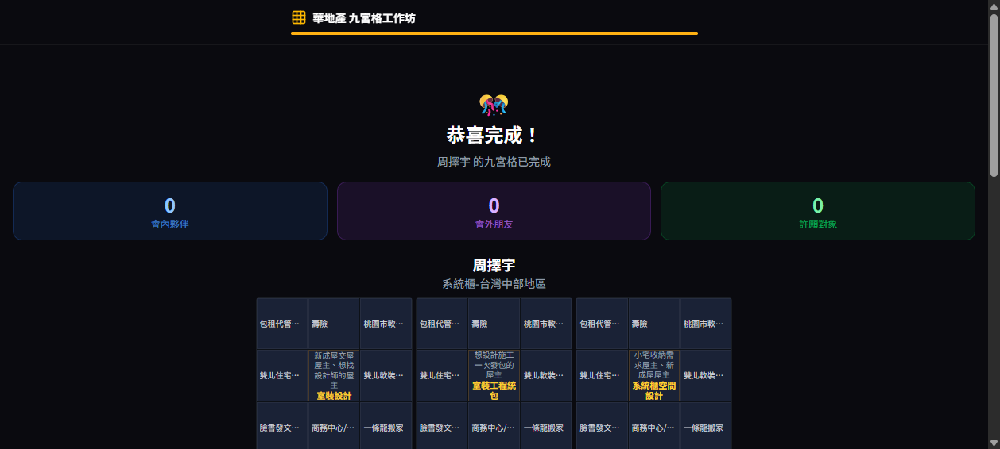
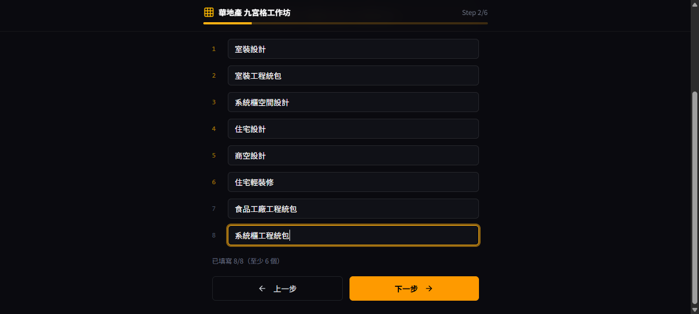
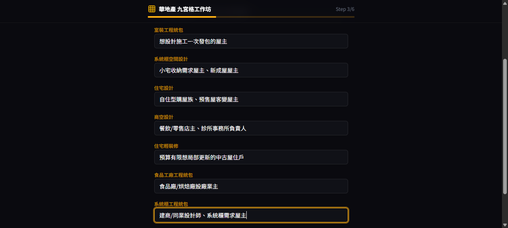
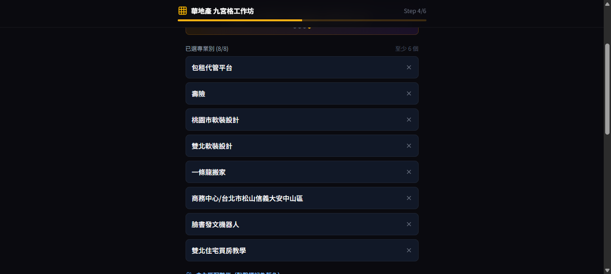

成果先看
下面是這次操作最終生成的九宮格：中心＝周擇宇（系統櫃-台灣中部地區），周圍 8 格＝核心服務，每格再帶外圈專業別與目標客戶。整個過程 6 步驟，往下看逐步怎麼做。

逐步操作（周擇宇系統櫃範本實例）
Step 1／6
選擇身份
本範本做法：點「不在名單中？手動輸入」→ 姓名填「周擇宇」、專業別填「系統櫃-台灣中部地區」→ 按「開始填寫九宮格」→「繼續」。
作用：這格成為九宮格中心（你本人／你的公司定位）。
Step 2／6
列出核心服務（8 個）

本範本填的 8 個（按重要性，第1=左上、順時針）：
- 室裝設計
- 室裝工程統包
- 系統櫃空間設計
- 住宅設計
- 商空設計
- 住宅輕裝修
- 食品工廠工程統包
- 系統櫃工程統包
至少 6 個、最多 8 個才能「下一步」。本範本填滿 8 個，把系統櫃公司「設計＋統包」的完整服務線一次攤開，方便夥伴對應引薦。
Step 3／6
填寫目標客戶

本範本對應的目標客戶：
| 服務 | 目標客戶 |
|---|---|
| 室裝設計 | 新成屋交屋屋主、想找設計師的屋主 |
| 室裝工程統包 | 想設計施工一次發包的屋主 |
| 系統櫃空間設計 | 小宅收納需求屋主、新成屋屋主 |
| 住宅設計 | 自住型購屋族、預售屋客變屋主 |
| 商空設計 | 餐飲/零售店主、診所事務所負責人 |
| 住宅輕裝修 | 預算有限想局部更新的中古屋住戶 |
| 食品工廠工程統包 | 食品廠/烘焙廠設廠業主 |
| 系統櫃工程統包 | 建商/同業設計師、系統櫃需求屋主 |
要具體到職位/族群，避免「所有人」這種空泛答案。
Step 4／6
選外圈專業別（每服務 8 個）

做法：系統會用 AI 建議分會內的專業別（＋按鈕）。為每個服務點選 8 個能跟你一起服務客戶/一起提案的專業別（如軟裝設計、搬家、水電、清潔、貸款專員…），點完按「下一個服務」，8 個服務都要做（第 8 個按「完成外圈」）。
這步是九宮格的「人脈/引薦」骨架——它就是你 Power Team 的潛在夥伴清單。
Step 5–6
會外朋友 / 許願對象（可跳過）
Step 5 會外朋友：為外圈專業別填你認識的分會外人脈（可跳過）。
Step 6 許願對象：填你最想被引薦的 Dream Referral（可跳過）。
Step 6 許願對象：填你最想被引薦的 Dream Referral（可跳過）。
本範本這兩步直接按「下一步」跳過，仍可生成九宮格。
完成
生成九宮格
正式存到平台/掛上分會，需點「使用 LINE 綁定帳號」登入。
一句話流程
手動輸入身份 → 排 8 個核心服務 → 填每個服務的目標客戶 → 每個服務選 8 個外圈專業別（下一個服務×8，完成外圈）→ 跳過會外/許願 → 生成九宮格（要存檔再 LINE 登入）。